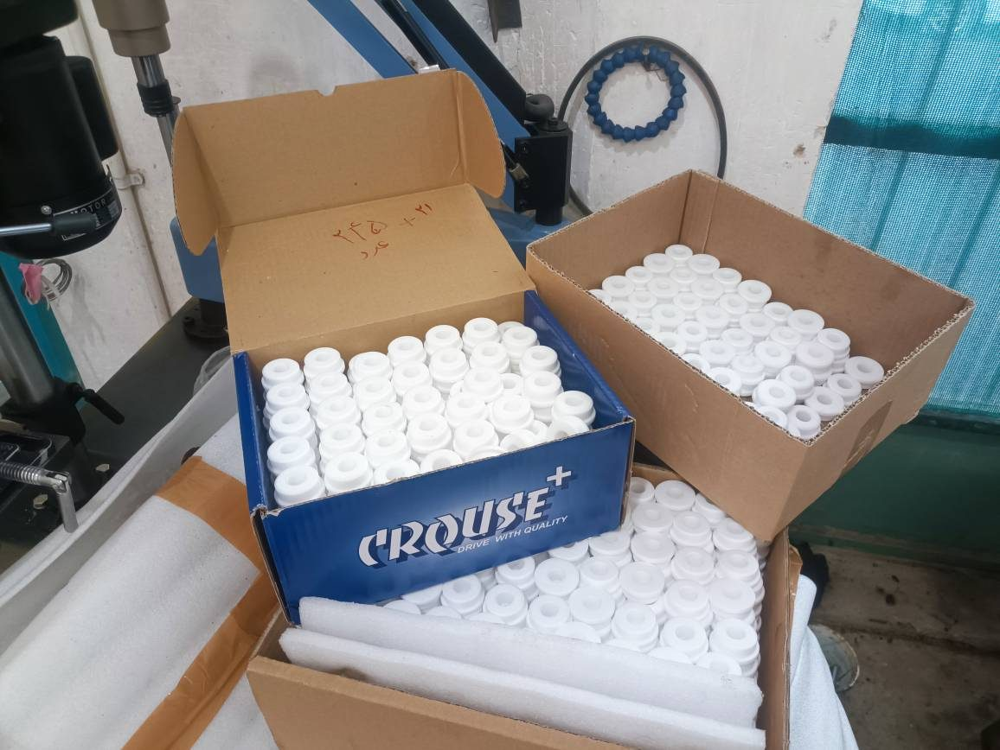
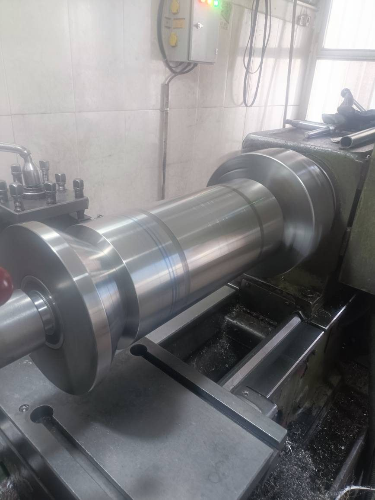
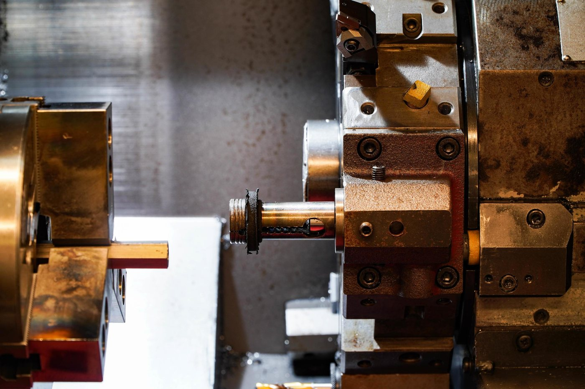
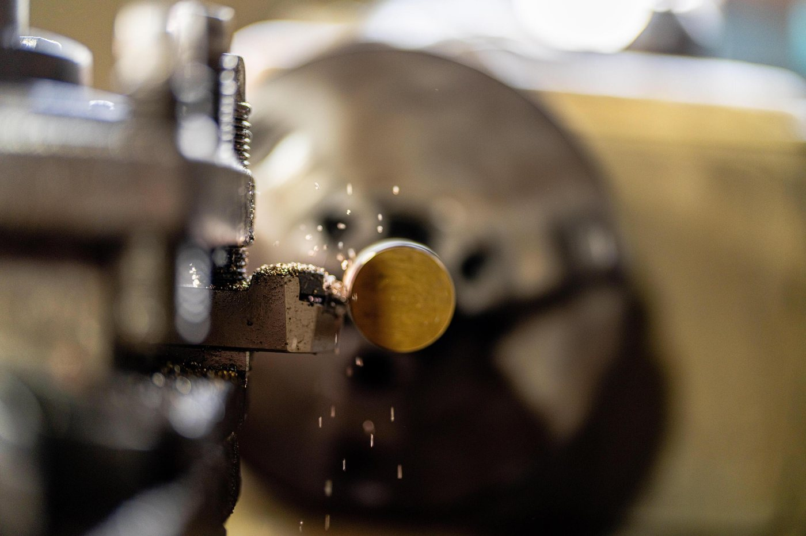

تراشکاری CNC قطعات صنعتی
تولید تیراژی با دقت تأییدشده
تولید تیراژی قطعات تراشکاری از برنج، فولاد آلیاژی MO40 و فولاد CK45 و فلزات دیگر، طبق نقشه و با تلرانسهای انطباقی دقیق. نقاط حساس هر قطعه پیش از تولید مهندسی و کنترل میشود، از اولین نمونه تا آخرین قطعهی سری.
- مخصوص: سفارشهای تیراژی
- جنس: برنج، MO40 (42CrMo4)، CK45 (C45) و فلزات دیگر
- دقت: تلرانسهای انطباقی، قطعات جفتشونده و گیج

تراشکاری CNC تیراژی یعنی تولید سری قطعات دوار مثل شفت، بوش، پین، نازل و اتصالات طبق نقشه، طوری که همهی قطعات دقیقاً مثل نمونهی تأییدشده باشند. هایپرفب در تهران قطعات تراشکاری تیراژی را از برنج، فولاد MO40 و CK45 و فلزات دیگر با تلرانسهای انطباقی تولید میکند و نمونهی اول را پیش از تولید سری به تأیید شما میرساند. قیمت بر اساس جنس، پیچیدگی قطعه، تلرانسها و تیراژ اعلام میشود؛ مشاوره: ۰۹۹۶۲۲۳۳۸۹۸.
- خدمت
- تراشکاری CNC تیراژی قطعات صنعتی طبق نقشه؛ تکقطعه فقط بهندرت پذیرفته میشود
- جنس
- برنج، MO40 (42CrMo4)، CK45 (C45)، استیل، آلومینیوم
- دقت
- تلرانسهای انطباقی، قطعات جفتشونده و گیج
- قیمتگذاری
- بر اساس جنس، پیچیدگی، تلرانسها و تیراژ
- سفارش
- تلفنی: ۰۹۹۶۲۲۳۳۸۹۸ · بله: @hyperfab_pro
- محل
- تهران
تراشکاری CNC تیراژی چیست و هایپرفب چه قطعاتی میسازد؟
تراشکاری CNC روش اصلی تولید قطعات دوار است: شفت، بوش، پین، مهره، نازل، اتصالات و قطعاتی که باید دقیقاً درون هم جا بیفتند. در تولید تیراژی، چالش واقعی ساختن یک قطعهی خوب نیست. چالش این است که صدها و هزاران قطعه، همه دقیقاً مثل همان قطعهی خوب باشند.
هایپرفب مدتهاست قطعات تراشکاری تیراژی تولید میکند. از قطعات برنجی با تلرانسهای انطباقی که باید درون هم جفت شوند، تا قطعات گیج از فولاد آلیاژی MO40 و فولاد CK45. این قطعات با دقت بالا تولید شدهاند و تأیید مشتری را گرفتهاند.
پشتوانهی این دقت، مهندسی پیش از تراش است. پیش از شروع تولید، نکات فنی هر قطعه مهندسی و به تراشکار ابلاغ میشود: سطوح انطباقی، قطرهای حساس، هممحوری و کیفیت سطح در نقاط ویژه. اینطوری تراشکار دقیقاً میداند کجای قطعه چه دقتی میخواهد. برای هر قطعه، روش ساخت و سطح دقت متناسب با الزاماتش انتخاب میشود؛ نه گرانتر از لازم، نه ضعیفتر از الزامات.





هایپرفب چه جنسها و قطعاتی را تراش میدهد؟
قطعات برنجی، فولاد آلیاژی MO40، فولاد CK45، قطعات گیج و جفتشونده، و قطعاتی از استیل، آلومینیوم و فولادهای دیگر؛ همه بهصورت تیراژی و طبق نقشه.
قطعات برنجی
بوش، نازل، اتصالات، پین و قطعات جفتشوندهی برنجی با تلرانس انطباقی و سطح تمیز.
فولاد MO40 (42CrMo4)
فولاد آلیاژی کروم-مولیبدن برای قطعات تحت بار و گیجها، با استحکام و چقرمگی بالا.
فولاد CK45 (C45)
فولاد کربنی متوسط برای شفت، پین، قطعات ماشینآلات و گیج.
قطعات گیج
گیجهای کنترل ابعادی که خودشان مرجع دقت خط تولیدند و خطایشان مستقیم به محصول منتقل میشود.
قطعات جفتشونده
انطباقهای لغزشی و پرسی بین قطعات، با کنترل قطرهای حساس و هممحوری.
فلزات دیگر
استیل، آلومینیوم و فولادهای دیگر، بسته به نیاز پروژه.
دقت قطعات در تولید تیراژی چطور حفظ میشود؟
با مهندسی نقشه پیش از تولید، تأیید نمونهی اول و کنترل ابعادی در طول تولید و پیش از تحویل.
مهندسی نقشه پیش از تولید: شناسایی سطوح انطباقی، ابعاد بحرانی و مبناهای اندازهگیری.
ابلاغ نکات فنی به تراشکار: دقت هر نقطهی ویژه، ترتیب عملیات و روش اندازهگیری.
دقت متناسب با الزامات: سطح دقت و هزینهی ساخت با اهمیت هر قطعه تنظیم میشود؛ نه بیشتر از لازم، نه کمتر.
تأیید نمونهی اول پیش از شروع تولید سری.
کنترل ابعادی در طول تولید و پیش از تحویل.
بستهبندی متناسب قطعات دقیق تا سطوح انطباقی آسیب نبینند.

قطعهی تراشخورده را آبکاری یا رنگ هم میکنید؟
بله. قطعهی تراشکاریشده معمولاً به پوشش یا مونتاژ هم نیاز دارد و در هایپرفب میتوانید آبکاری نقره و طلا، آندایز و کروماته، رنگ کورهای و جوشکاری را هم در همان پروژه بسپارید، تا قطعهی نهایی و آمادهی مصرف تحویل بگیرید.
برای تکقطعه و نمونهی اولیه، ماشینکاری CNC در سایت هایپرفب را ببینید.
سفارش تراشکاری تیراژی چه مراحلی دارد؟
پنج مرحله: ارسال نقشه، بررسی مهندسی، پیشنهاد قیمت، ساخت و تأیید نمونهی اول، و تولید سری و تحویل.
ارسال نقشه
نقشهی ابعادگذاریشده با تلرانسها، جنس و تیراژ را بفرستید یا تلفنی شرح دهید.
بررسی مهندسی
سطوح انطباقی و ابعاد بحرانی شناسایی و نکات ساخت مشخص میشود.
پیشنهاد قیمت
قیمت بر اساس جنس، پیچیدگی، تلرانسها و تیراژ اعلام میشود.
نمونهی اول
نمونهی اول ساخته و کنترل میشود و پس از تأیید شما تولید سری شروع میشود.
تولید و تحویل
تولید سری با کنترل ابعادی و تحویل قطعات.
تراشکاری CNC تیراژی در تصویر



سؤالات متداول
هایپرفب تراشکاری CNC تیراژی انجام میدهد؟
قطعات فولاد MO40 و CK45 تراش میدهید؟
قطعات برنجی جفتشونده با تلرانس دقیق میسازید؟
حداقل سفارش تراشکاری تیراژی چقدر است؟ تکقطعه هم تراش میدهید؟
قیمت تراشکاری CNC تیراژی چطور محاسبه میشود؟
برای سفارش تراشکاری تیراژی چه چیزی بفرستم؟
آبکاری یا رنگ قطعات را هم انجام میدهید؟
تراشکاری CNC تیراژی هایپرفب کجاست؟
نقشهی قطعهی تیراژی خود را بفرستید
نقشه با تلرانسها، جنس و تیراژ را بفرستید یا تماس بگیرید. کارشناس پروژههای صنعتی هایپرفب تلفنی پاسخگوی شماست.